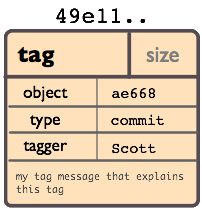
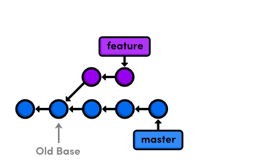

Pusher pour réussir
Pusher pour réussir
Qui suis-je ?
- Devops passionné
- Fan et contributeur Open Source
- Membre de l'équipe du ToulouseJug
- Utilisateur de Git depuis 2010
Git - finalement assez simple

Un peu d'histoire, quand même.
1900 → 2002 : le développement de Linux utilise tarball
For the first 10 years of kernel maintenance, we literally used tarballs and patches, which is a much superior source control management system than CVS is – Linus Torvalds
2002 : Passage à BitKeeper
DVCS closed-source, licences offertes à l'OSS
Avril 2005 : Fin annoncée de la licence gratuite
Provoqué par un reverse-engineering du protocole BitKeeper par Andrew Tridgell
7 Avril 2005 : Première version de Git
I'm an egotistical bastard, and I name all my projects after myself. First 'Linux', now 'git'.
– Linus Torvalds
Les quelques commandes de Git

Super ! Mais en vrai, on utilise quoi ?

DVCS
Décentralisé
- Techniquement, pas besoin de serveur
- (Presque) Tout se passe donc en local
- Après un clone, tout l'historique du projet est en local et ne nécessite plus aucun accès réseau pour le manipuler
Performances, les origines
[…] to make that process really efficient. If it takes half a minute to apply a patch and remember the changeset boundary […] then a series of 250 emails […] takes two hours. If one of the patches in the middle doesn't apply, things are bad bad bad.
Des snapshots, pas des diff

Les 4 types d'objets
-
blob
Contenu d'un fichier identifié par un hash

-
tree
Liste de références vers des hashes

-
commit
Référence le hash d'un tree + métadonnées

-
tag
Nom donné à un commit + métadonnées 
Les commits Git
- Identifié par un hash SHA-1
- Version courte ≥ 4 caractères possible (si non ambiguë)
- 53b8 = 53b89fc7bb117aee396285f9bc6ce913599a6574
- 1 à n parents
- DAG : Directed Acyclic Graph

Sondage : qui a déjà utilisé les merges avec svn ?
Un peu de concentration
Quand ça plante pas


Avec Git, les merge just fonctionnent

Bref, les branches c'est la vie
Les branches ?
- Simple pointeur vers un commit
- Git référence des têtes
- Tout commit non référencé par un nom finira supprimé (dans longtemps)
- Commit non référencé : Dangling ou detached HEAD

- Git a aussi un Garbage Collector ! :-)
Bon, mais comment on démarre ?
$ git config user.name "Baptiste Mathus"
$ git config user.email batmat@batmat.net
$ mkdir nouveaurepo
$ cd nouveaurepo/
$ git init
Initialized empty Git repository in nouveaurepo/.git/
$ git commit -m "Initial commit" --allow-empty
[master (root-commit) 53b89fc] Initial commit
$ touch pouet
$ git add pouet
$ git commit -m "Création du premier fichier indispensable."
[master 2ce6ac4] Création du premier fichier indispensable.
0 files changed
create mode 100644 pouet
En détails
git commit -m "Initial commit" --allow-empty
Conseil : toujours un commit racine vide
git add
⇒ ajout dans l'index
L'index : espace de préparation du prochain commit

On peut stager morceau par morceau !
Les commandes essentielles : merge & rebase
Merge
Créer un point de jonction entre plusieurs commits : un merge-commit

Rebase
Rejouer des commits par-dessus d'autres
Avant :

Rebase
Rejouer des commits par-dessus d'autres
Après :

Concept très important : le fast-forward
Si possible, Git cherche à ne pas créer de commit de merge même si on lui demande un merge

$ git checkout master
$ git merge feature
Updating 38d98a8..d92c9b5
Fast-forward
Rebase interactif : réécrire l'histoire !
$ git rebase -i HEAD~3
pick 910f70a Message antépénultième commit
pick 0e7f74d Message avant-dernier commit
pick 77aab98 Message dernier commit
# Rebase 77f6f4a..77aab98 onto 77f6f4a
#
# Commands:
# p, pick = use commit
# r, reword = use commit, but edit the commit message
# e, edit = use commit, but stop for amending
# s, squash = use commit, but meld into previous commit
# f, fixup = like "squash", but discard this commit's log message
# x, exec = run command (the rest of the line) using shell
#
# These lines can be re-ordered; they are executed from top to bottom.
#
# If you remove a line here THAT COMMIT WILL BE LOST.
#
# However, if you remove everything, the rebase will be aborted.
#
# Note that empty commits are commented out
Quelques autres commandes intéressantes
git reflog
Peut vous sauver la vie :-)
Un filet de sécurité :
$ git reflog
2ce6ac4 HEAD@{0}: checkout: moving from nouvellebranche to master
07df291 HEAD@{1}: checkout: moving from 07df291f4d7fc93b10f28ae25c04fff67d674f30 to nouvellebranche
07df291 HEAD@{2}: commit: Nouveau commit
53b89fc HEAD@{3}: checkout: moving from master to 53b89fc
2ce6ac4 HEAD@{4}: commit: Création du premier fichier indispensable.
53b89fc HEAD@{5}: commit (initial): Initial commit
Bisect
killer-feature : recherche d'un commit problématique par dichotomie
$ git bisect log
git bisect start
# good: [aa630f76c8c3e8e0ee894538e5bf262890afb862] [maven-release-plugin] prepare release jenkins-1.423
git bisect good aa630f76c8c3e8e0ee894538e5bf262890afb862
# bad: [cbb2e30deb846414c203a36c9b4fdf00c1193c25] [maven-release-plugin] prepare release jenkins-1.424
[...]
git bisect bad cbba3c88a9ce76edd47a4ab9b9e54dc9bb05e606
# bad: [1fd7fb2c11dd3cb46843d274fcd4aaf44f34213b] when tried stand-alone, I learned that those dependencies cannot be really excluded.
git bisect bad 1fd7fb2c11dd3cb46843d274fcd4aaf44f34213b
1fd7fb2c11dd3cb46843d274fcd4aaf44f34213b is the first bad commit
commit 1fd7fb2c11dd3cb46843d274fcd4aaf44f34213b
Author: Kohsuke Kawaguchi <kk@kohsuke.org>
Date: Sat Jul 30 09:59:07 2011 -0700
when tried stand-alone, I learned that those dependencies cannot be really excluded.
:040000 040000 afe7deb89dae782db89ee79e36d767f348b6f1b5 e2be3a211e5a211ad0d91fee8e32095a888d4786 M core
Démo

Conclusion & Conseils
- Git reste simple si on fait du svn-like
- Commit, push, pull, commit, push, et voilà...
- En cas d'erreur, lisez ce qui est affiché...
- Git est complexe pour les cas plus avancés
- Mais
L'homme qui augmente sa capacité de comprendre augmente sa puissance d'agir.
– Abla Farhoud
- Avec Git, sachez où vous êtes et où vous allez !
Références
- Page web interactive mnémotechnique
http://ndpsoftware.com/git-cheatsheet.html
- Apprendre Git en ligne
http://pcottle.github.com/learnGitBranching/
http://try.github.com/levels/1/challenges/1
- Présentations de Sébastien Douche au ParisJUG
http://www.parleys.com/#id=2366&st=5
http://www.parleys.com/#st=5&id=2368
- Présentation de David Gageot au BreizhJug
http://www.parleys.com/#st=5&id=2117&sl=2
- Présentations de Scott Chacon
https://github.com/schacon/git-presentations
- Présentation Git par Linus Torvalds chez Google
http://www.youtube.com/watch?v=4XpnKHJAok8
- Un merci général à Internet pour certains graphes de cette présentation ;-)
/